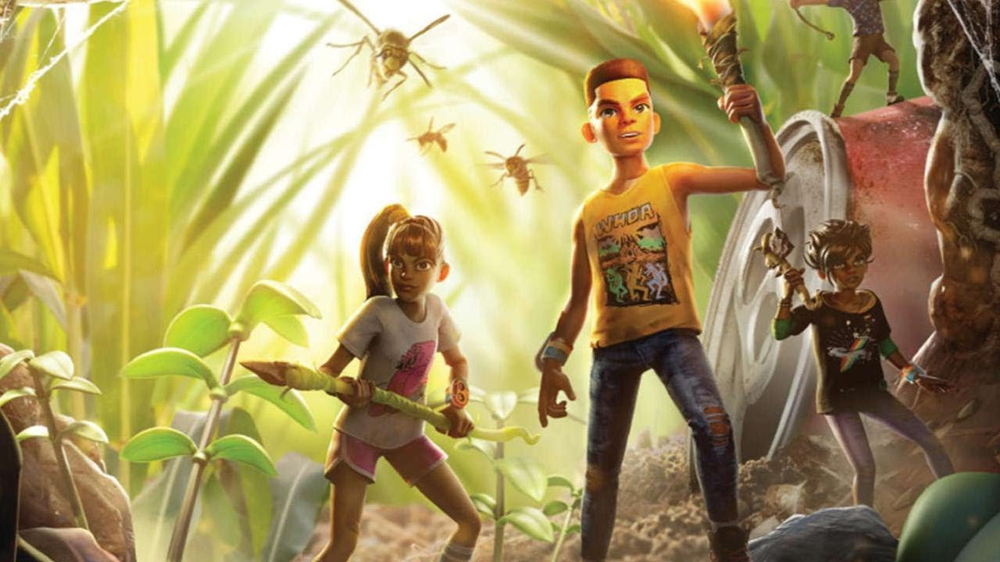
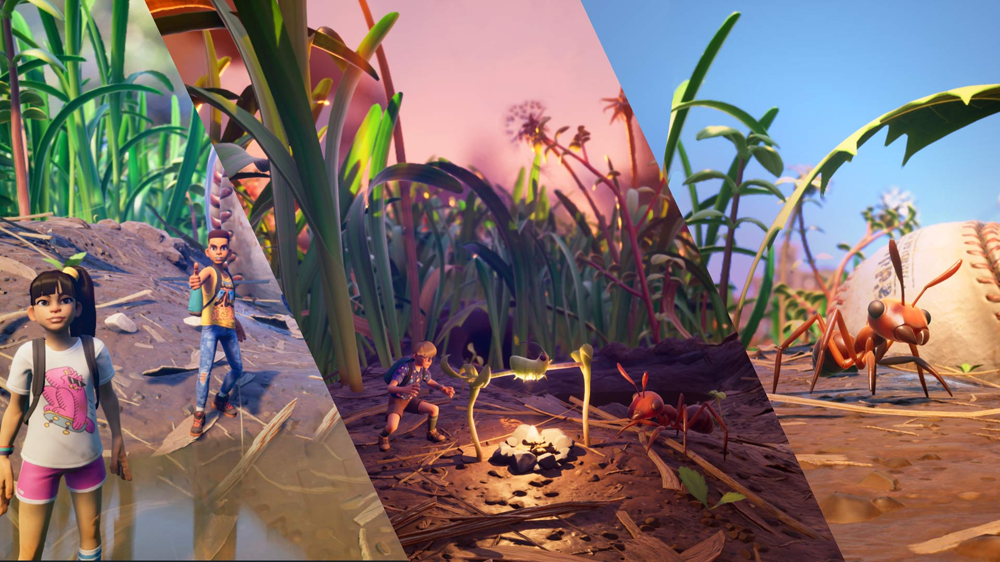
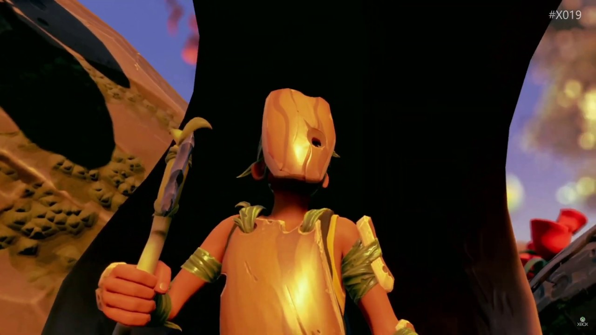
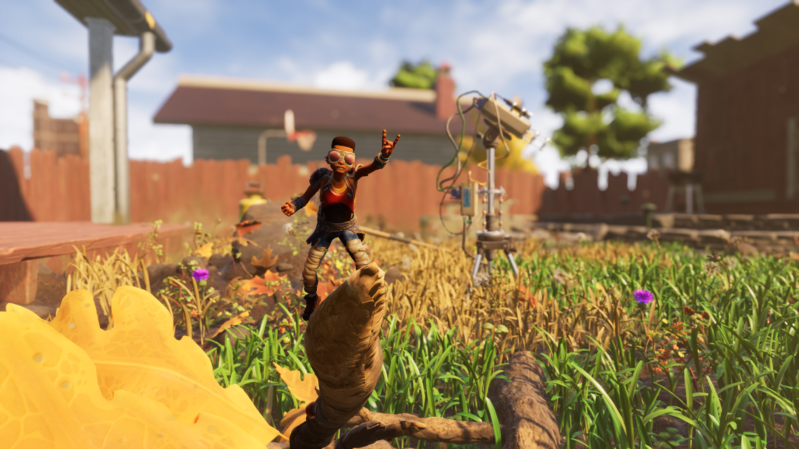

Grounded is an early access, cooperative survival game from Obsidian Entertainment, in which you are shrunk to the size of an ant and must survive in the beautiful yet perilous micro-world of a suburban backyard. Progress through story-based missions, explore the intricately detailed game world, search for life-saving resources and defend against a host of unpredictable creatures! Know something we don't? Sign up or login and join our community!
Read more
Latest News

PATCH 0.12.1 IS ON IT'S WAY
Hello everyone! We have just released patch 0.12.1 in order to fix some issues you have been reporting. Please update your game as soon as you can and let us know if you continue to experience any further issues.
Read more

THE TIME HAS COME TO GO INTO THE WOOD
🏡 Join Shyla, Obsidian's Social Media Manager, as she takes you on a journey into an uncharted area of the backyard: the Upper Yard. Explore new areas that have opened up, take a peep(.r) at some new features and changes, and get ready to meet your ten new neighbors, plus a royal guest!
Read more

OH NO! MY BBQ! IT FELL OVER AND OPENED UP PUBLIC TEST 0.12.0!
It tipped over and opened up another area to the backyard. Shucks. I guess we'll just open up that area of the backyard and release Public Test 0.12!
Note for the test: The new areas are still in active development. We encourage everyone to build in these areas for feedback and...
Read more

HAPPY TUESDAY! HERE'S PATCH 0.11.6!
Patch 0.11.6 has been released for all players. Please update your game when you see that this update is available to receive the following fixes and changes:
Bug Fixes - All Platforms:
Major Issues:
Grass...
Read more